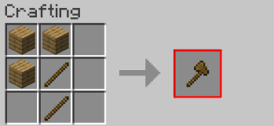

Les haches dans minecraft
Les différents types de haches dans minecraft
- Hache en bois
- Hache en pierre
- Hache en fer
- Hache en or
- Hache en diamant
- Hache en netherite
Les haches (nom anglais : axes) sont des outils auxiliaires utilisés pour faciliter la collecte du bois et autres objets en bois (planches, coffres, bibliothèques, etc...), mais ne sont cependant pas indispensables pour collecter ces objets. Elles peuvent également être utilisées en tant qu’armes.
La recette de la hache dans Minecraft consiste a mettre 2 bâtons dans la case du centre et celle du centre bas de l'établi, et puis mettre 3 matériaux dans le coin a gauche ou a droite, comme montré ci-contre
Quoi que vous en puissiez dire, mon cher abbé, répliquait M. de Rênal, je n’exposerai pas l’administration de Verrières à recevoir un affront de M. de La Mole. Vous ne le connaissez pas, il pense bien à la cour ; mais ici, en province, c’est un mauvais plaisant satirique, moqueur, ne cherchant qu’à embarrasser les gens. Il est capable, uniquement pour s’amuser, de nous couvrir de ridicule aux yeux des libéraux.